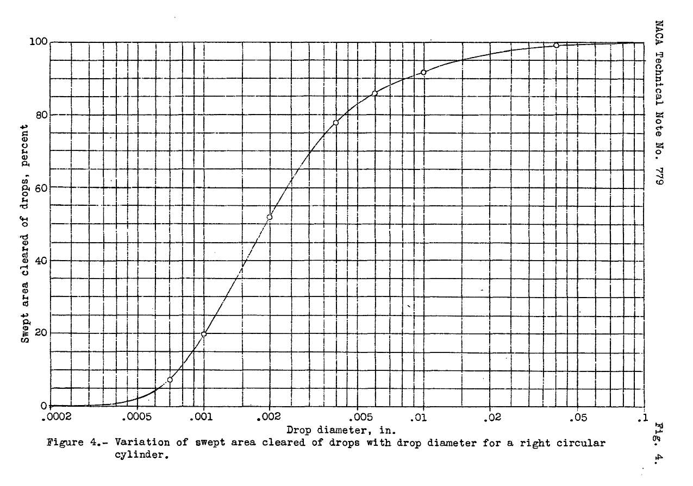
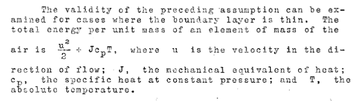

"In order to provide qualitative information ..., numerical calculations of the drop paths in air flowing ... around a circular cylinder were made"

“Aerodynamic Heating and Deflection of Drops by an Obstacle in an Airstream in Relation to Aircraft Icing"
Summary
Water drop impingement on a cylinder is calculated.
Key points
- The effect of aerodynamic heating is predictable
- The impingement of water drops on a cylinder is calculated
Abstract
Two topics of interest to persons attempting to apply the heat method of preventing ice formation on aircraft are considered. Surfaces moving through air at high speed are shown, both theoretically and experimentally, to be subject to important aerodynamic heating effects that will materially reduce the heat required to prevent ice.
Numerical calculations of the paths of water drops in an air stream around a circular cylinder are given. From these calculations, information is obtained on the percentage of the swept area cleared by drops.
Discussion
The first topic experimentally confirms the theory of the aerodynamic heating effect. This concept will be used extensively in subsequent works (although they may not necessarily cite this technical note).

The second topic is an analysis of water drop impingement on a cylinder. A cylinder was selected to provide "qualitative" information.
None of the references cited in NACA-TN-779 were on this topic, so this perhaps represents original work. However, there was a nearly contemporaneous publication by Glauert2 (which I have not been able to get a copy of) that may have similar data. Langmuir 3 credits Albrecht 4 for an earlier cylinder impingement analysis (1931), and it is noted that "Glauert did not know of Albrecht's earlier work", so perhaps Kantrowitz did not know of it either.
Langmuir 3 credits Kantrowitz for including the non-Stokes' Law drag coefficients for spheres 5 into the calculation of water drop impingement, perhaps for the first time.
The cylinder analyzed was 12 inch in diameter, with an airspeed of 200 mph. The altitude was not noted. Water drop diameters from 0.002 inch (about 8 micrometer) to 0.1 inch (about 4000 micrometer) were considered, as shown below.
The “swept area of cleared drops” represents what fraction of the water drops in the forward projected area of the cylinder impinge on the cylinder. In more modern terms, this is the total water impingement efficiency, E, of reference 6.
Citations
NACA-TN-779 cites 6 works, 3 of them are NACA publications.
- von Kármán, Th., and Tsien, H. S.: Boundary Layer in Compressible Fluids. Jour. Aero. Sci., vol. 5, no. 6, April 1938, pp. 227-232.
- Goldstein, S.: Modern Developments in Fluid Dynamics. The Clarendon Press, Oxford, 1938.
- Stack, John, Lindsey, W. F., and Littell, Robert E.: The Compressibility Burble and the Effect of Conmpressibility on Pressures and Forces Acting on an Airfoil. NACA-TR-646, 1938.
- Theodorsen, Theodore: Theory of Wing Sections of Arbitrary Shape. NACA-TR-411, 1931.
- Zahm, A. F.: Flow and Drag Formulas for Simple Quadrics. NACA-TR-253, 1927.
- Glauert, H.: The Elements of Aerofoil and Airscrew Theory. The Univ. Press (Cambridge), 1926.
NACA-TN-779 is cited 7 times in the NACA Icing Publications Database 7. All of these are in the context of water drop trajectories (not aerodynamic heating).
- Kimball, Leo B.: Icing Tests of Aircraft-Engine Induction Systems. NACA-WR-W-97, Jan. 1943.
- Langmuir, Irving, and Blodgett, Katherine B.: A Mathematical Investigation of Water Droplet Trajectories. Tech. Rep. No. 5418, Air Materiel Command, AAF, Feb. 19, 1946. (Contract No. W-33-038-ac-9151 with General Electric Co.)
- Bergrun, Norman R.: A Method for Numerically Calculating the Area and Distribution of Water Impingement on the Leading Edge of an Airfoil in a Cloud. NACA-TN-1397, 1947.
- Guibert, A. G., Janssen, E., and Robbins, W. M.: Determination of Rate, Area, and Distribution of Impingement of Waterdrops on Various Airfoils from Trajectories Obtained on the Differential Analyzer. NACA-RM-9A05, 1949.
- Brun, Rinaldo J., and Mergler, Harry W.: Impingement of Water Droplets on a Cylinder in an Incompressible Flow Field and Evaluation of Rotating Multicylinder Method for Measurement of Droplet-Size Distribution, Volume-Median Droplet Size, and Liquid-Water Content in Clouds. NACA-TN-2904, 1953.
- Serafini, John S.: Impingement of Water Droplets on Wedges and Double- Wedge Airfoils at Supersonic Speeds. NACA-TR-1159, 1954. (Supersedes NACA-TN-2971.)
- Brun, Rinaldo J., Lewis, William, Perkins, Porter J., and Serafini, John S.: Impingement of Cloud Droplets and Procedure for Measuring Liquid-Water Content and Droplet Sizes in Supercooled Clouds by Rotating Multicylinder Method. NACA-TR-1215, 1955. (Supersedes NACA TN’s 2903, 2904, and NACA-RM-E53D23)
Related Works
There were several later studies of the aerodynamic heating specifically for a cylinder (without ice) in 8, 9, and 10.
Notes:
-
Kantrowitz, Arthur: Aerodynamic Heating and Deflection of Drops by an Obstacle in an Airstream in Relation to Aircraft Icing. NACA-TN-779, 1940 ntrs.nasa.gov. ↩
-
Glauert, Muriel: A Method of Constructing the Paths of Raindrops of Different Diameters Moving in the Neighbourhood of (1) a Circular Cylinder, (2) an Aerofoil, Placed in a Uniform Stream of Air; and a Determination of the Rate of Deposit of the Drops on the Surface and the Percentage of Drops Caught. R. & M. No. 2025, British A.R.C., 1940. ↩
-
Langmuir, Irving: Super-Cooled Water Droplets in Rising Currents of Cold Saturated Air, Pt. I. Res. Lab., General Electric Co., Oct. 1943-Aug. 1944. (Army Contract W-33-106-sc-65.) ↩↩
-
Albrecht, F.: Theoretical investigation of accretion of aerosol particles in an air, stream and an application of the theory of the aerosol filter. Phys. Z 32 (1931): 48-56. ↩
-
Zahm, A. F.: Flow and Drag Formulas for Simple Quadrics. NACA-TR-253, 1927. ↩
-
“Aircraft Icing Handbook, Volume I.” DOT/FAA/CT-88/8-1 (1991) apps.dtic.mil .
Also note that there was a perhaps little known update in 1993 (that did not affect the pages of interest herein): apps.dtic.mil ↩ -
Eckert, E., and Weise, W.: The Temperature of Unheated Bodies in a High-Speed Gas Stream, NACA-TM-1000, 1941. ↩
-
Eckert, E., and Livingood, John N. B.: Method for Calculation of Heat Transfer in Laminar Region of Air Flow Around Cylinders of Arbitrary Cross Section (including Large Temperature Differences and Transpiration Cooling). NACA-TN-2733, June 1, 1952. ↩
-
Eckert, E., and Livingood, John N. B.: Method for Calculation of Laminar Heat Transfer in Air Flow Around Cylinders of Arbitrary Cross Section (including Large Temperature Differences and Transpiration Cooling). NACA-TR-1118, Jan. 1, 1953. ↩